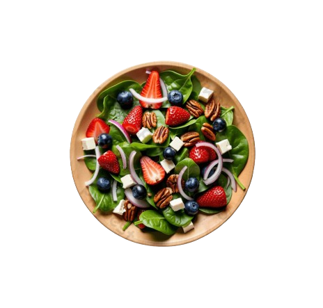
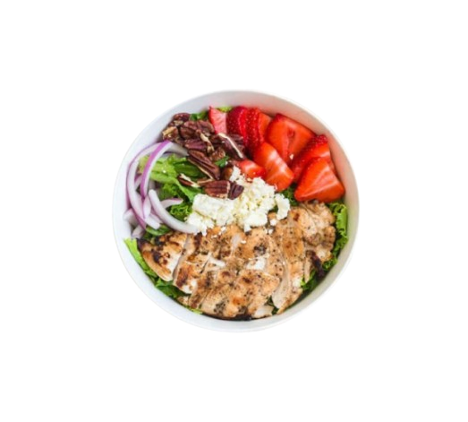
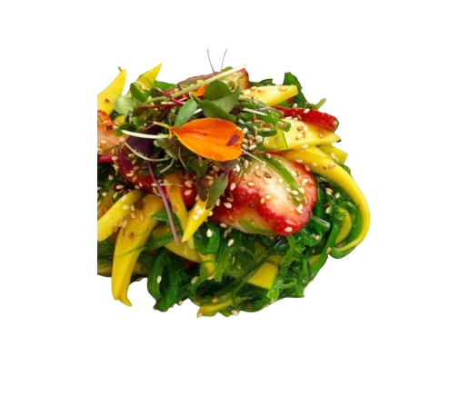
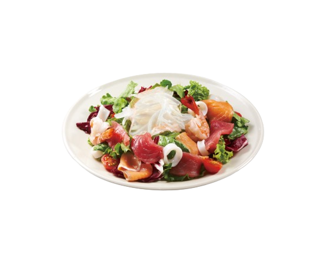
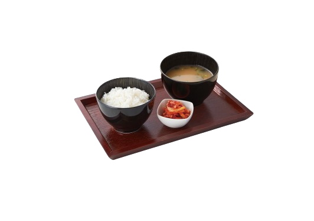

Ichigo’s Salad
Fresh Salad with Berries, Nuts and Tofu.

Strawberry Chicken Salad
Fresh Salad with Marinated chicken and Honey Dijon dressing.

BiCE Seaweed Salad
Fresh Salad with Mango Soy sauce and toasted sesame seeds.

Seafood Sashimi Salad
Fresh seafood salad served with citrus soy dressing.

Rice Set
Steamed rice with side dishes and miso soup.